課堂探索
孩子在感官材料、繪本與遊戲情境中的探索過程。
這裡是幼學小日子春季班的照片紀錄，留給班級家長回看孩子在課堂中的探索、創作與生活片刻。
這些照片紀錄孩子在教室裡慢慢熟悉環境、嘗試材料、和同伴一起工作的樣子。請家長僅作為家庭回憶留存，不公開轉傳。
孩子在感官材料、繪本與遊戲情境中的探索過程。
孩子用顏色、線條與身體經驗留下的創作紀錄。
入園暖身、團體適應、情緒穩定與生活自理的日常畫面。
在倒、拿、放、觀察與等待之間，孩子慢慢建立自己的節奏。
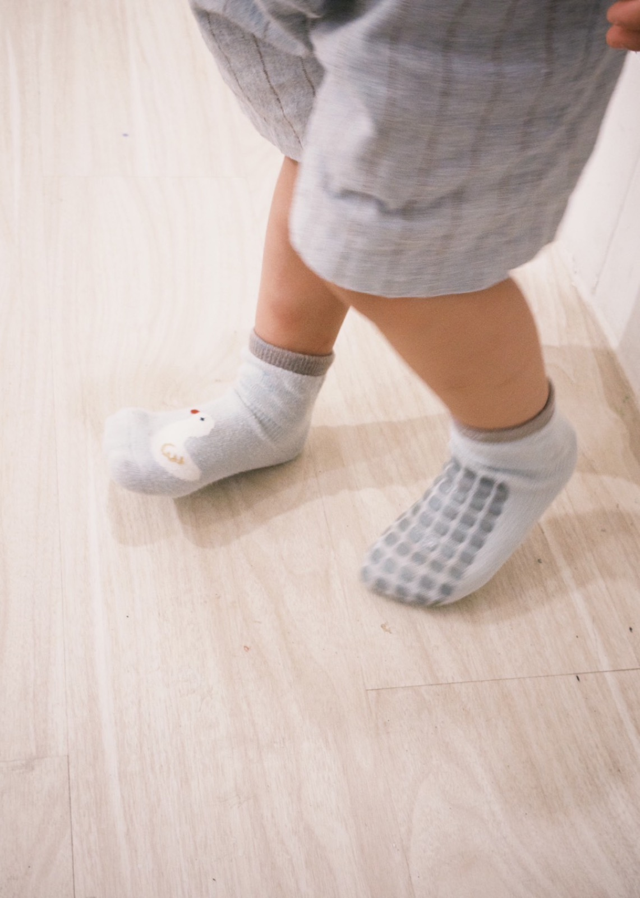
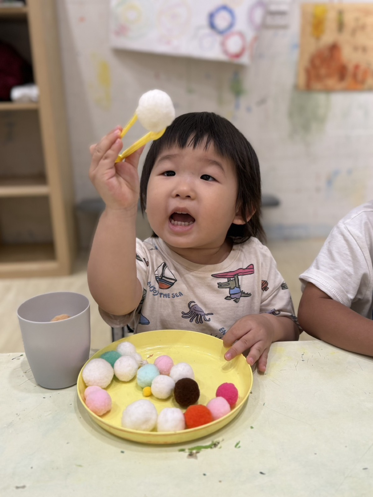
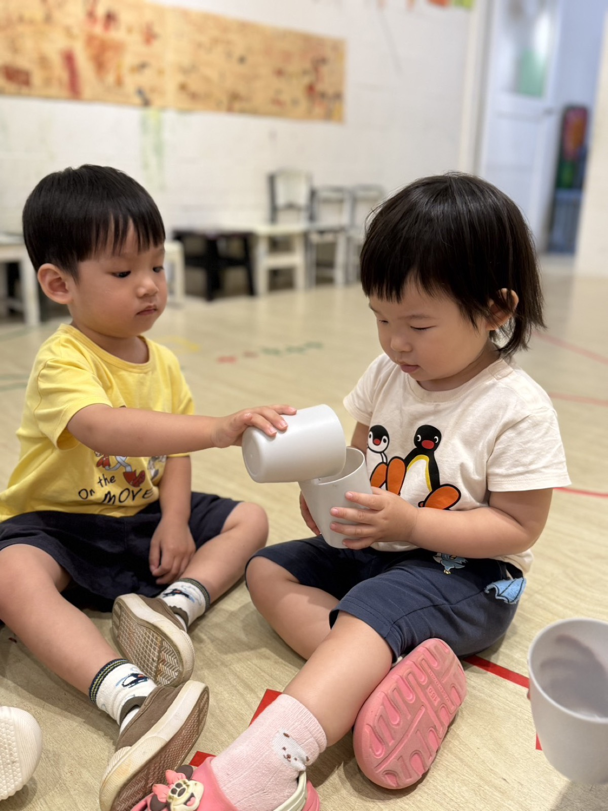
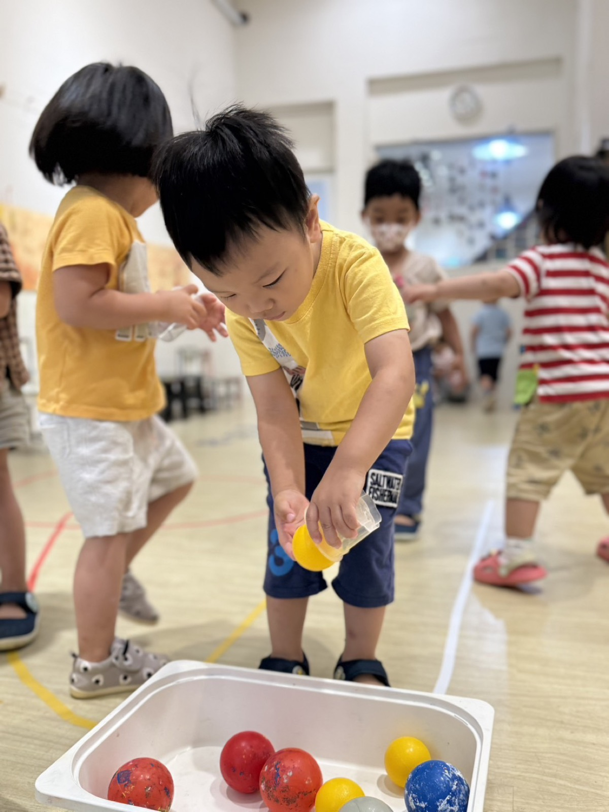
孩子透過材料、繪本與空間線索，練習觀察、分類、堆疊與關係理解。
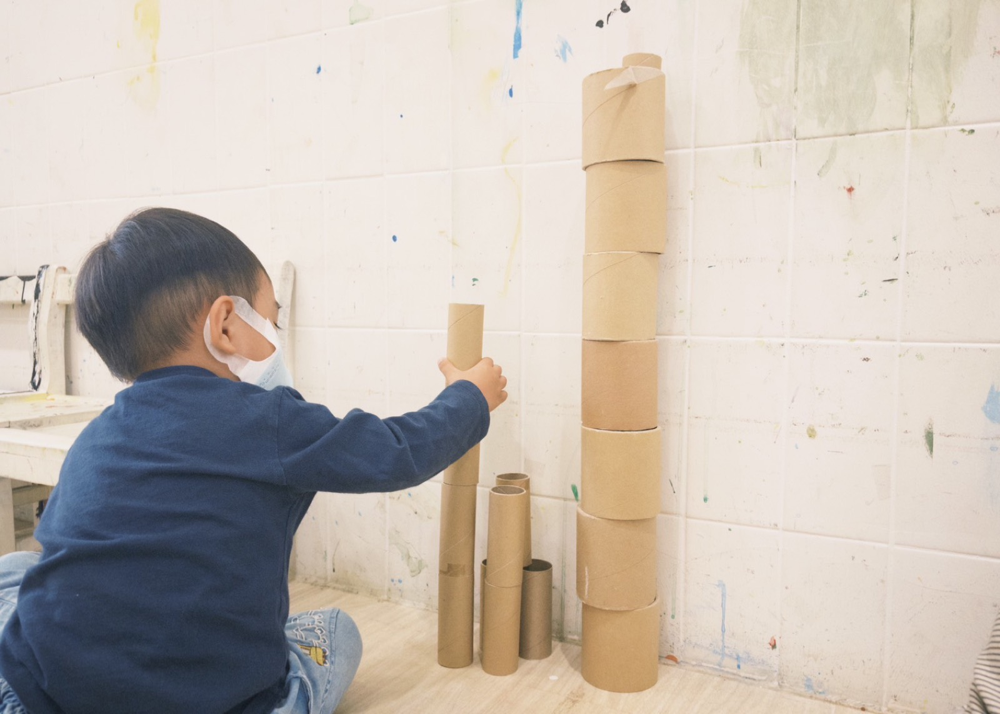
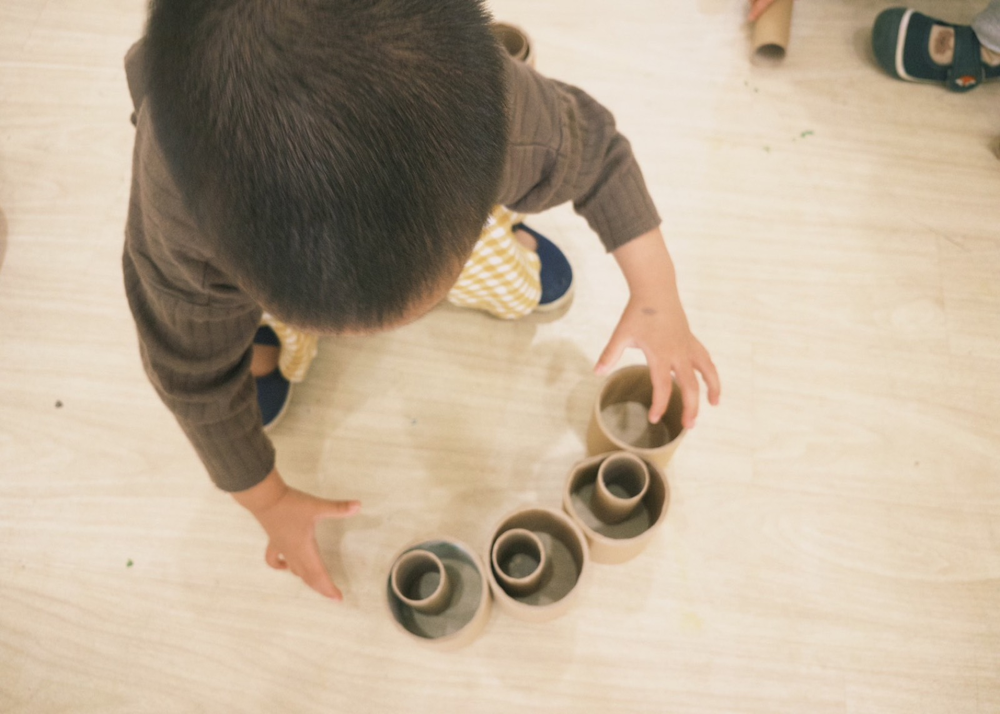
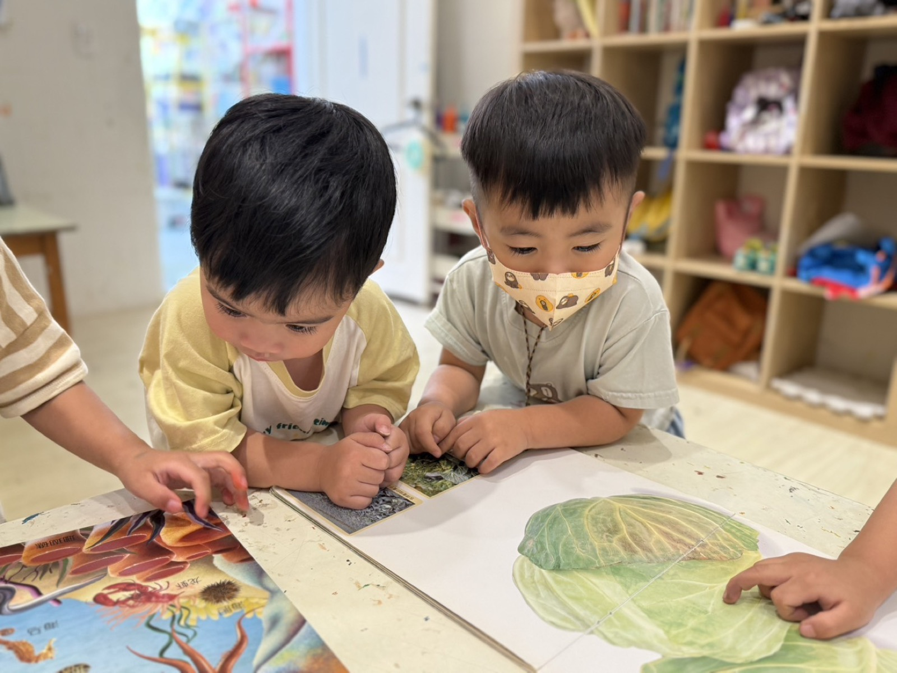
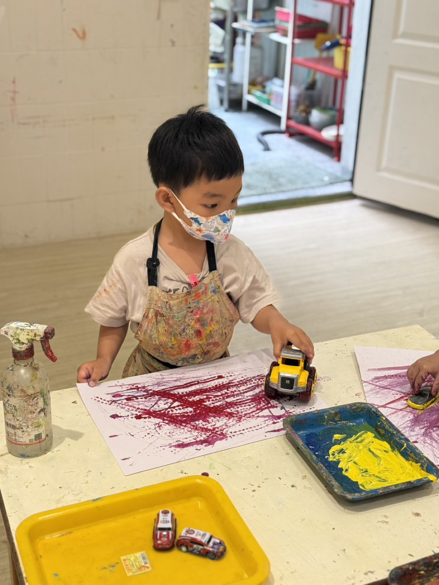
創作不是完成品而已，更是孩子把感覺、故事與想法慢慢說出來的過程。
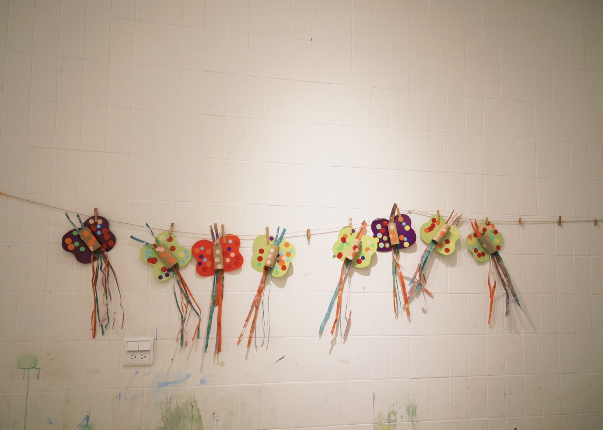
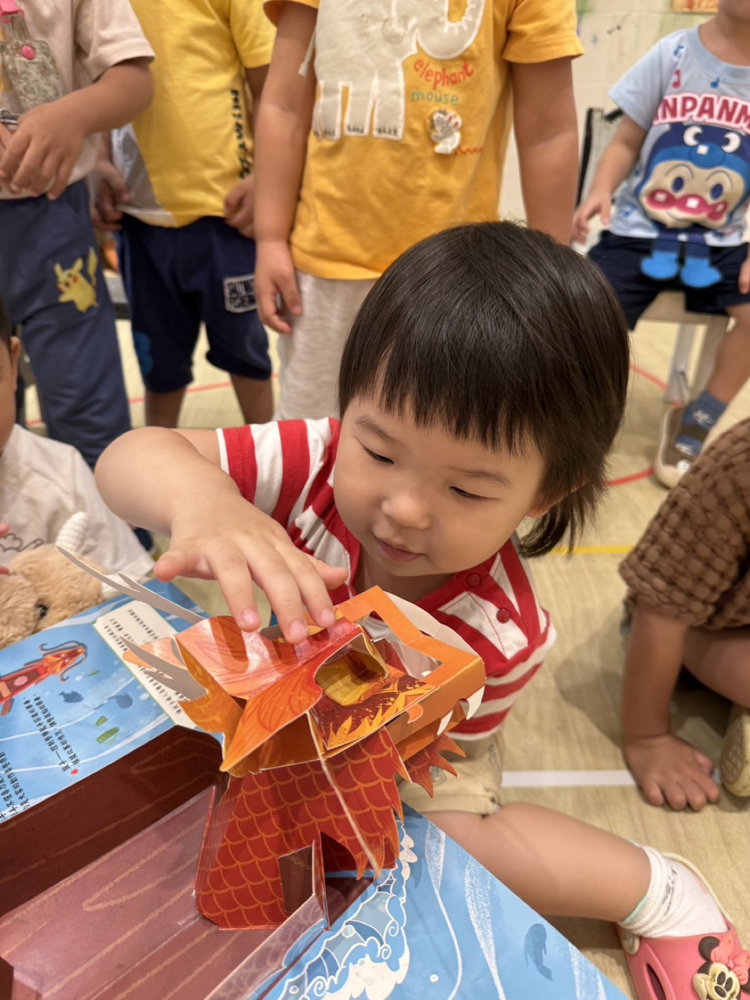
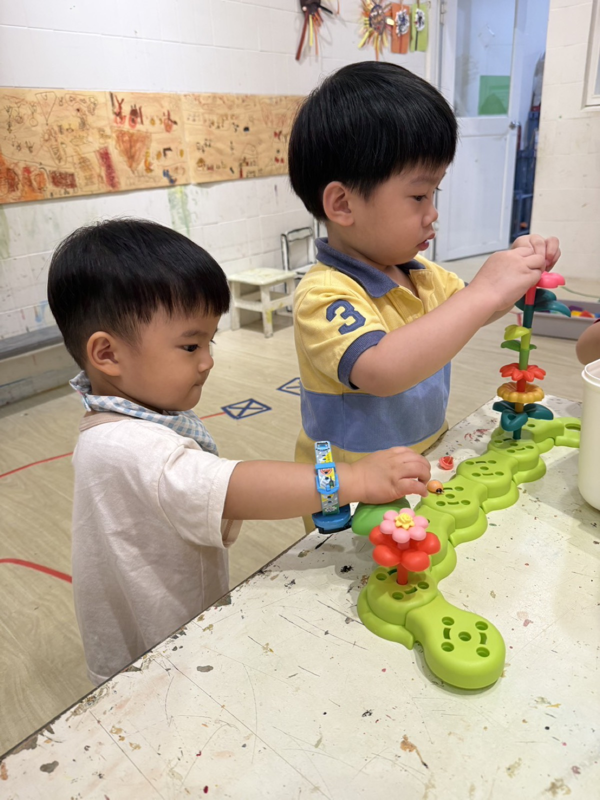
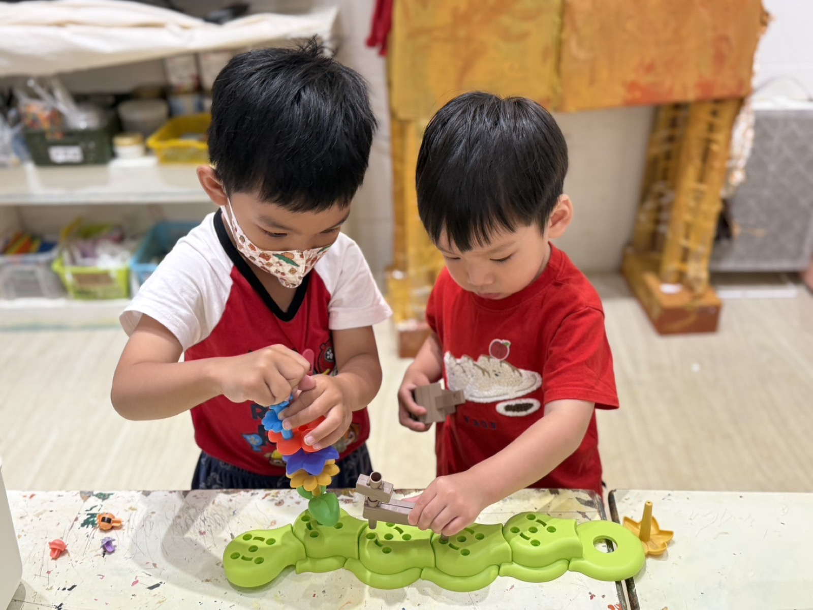
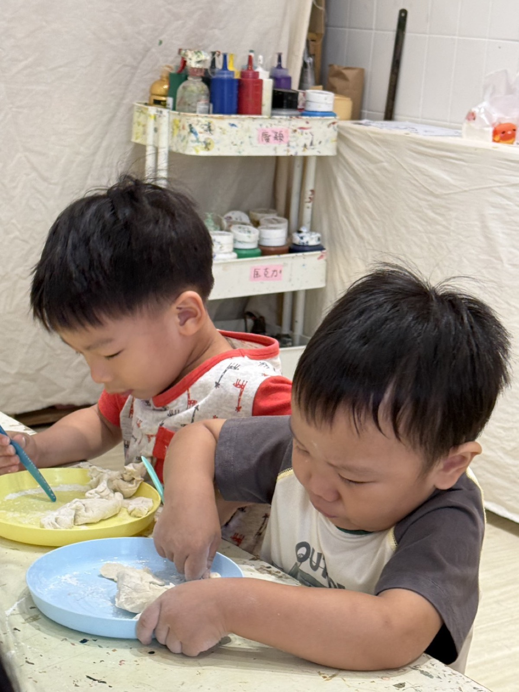
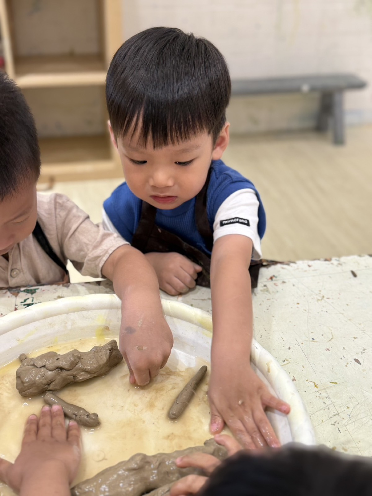
請家長僅作為家庭回憶留存，避免公開轉傳、截圖散布或作為其他用途。謝謝你一起守護每個孩子的隱私與安全感。